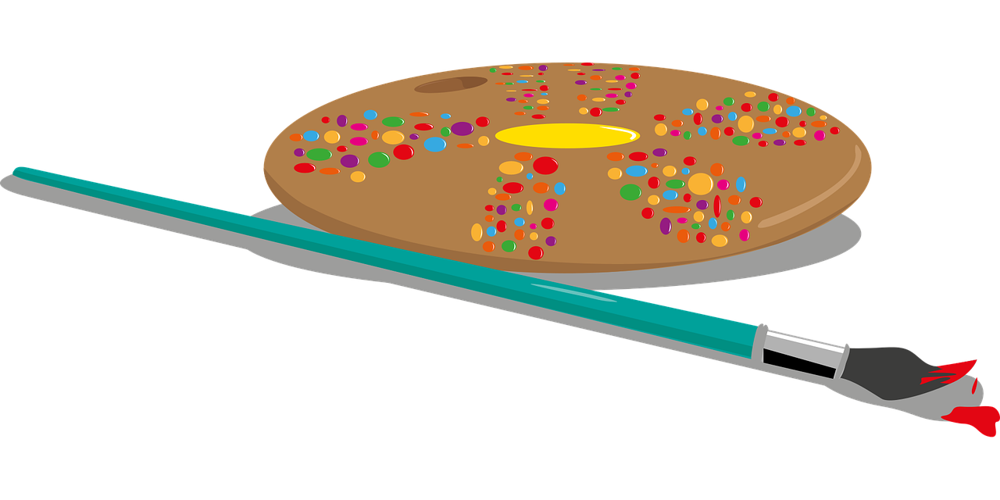

Hello I'm daniel! I am currenlty interested on Graphics arts here at MCC. I lived in Crystal lake for 20 years since I was born. I enjoyed making concept projects on the computer and making fictional art on programs. I was interested of computer art related class taking in college So I decided to take Graphic design class, 2D, Digital illustration & Computer art here at MCC. I enjoyed on what I made in class and presented it and comment on how it looked based on the elements in design. In my thoughts, I think my best effort was to add more texture and other elements as well as improving. But overall, I enjoyed on making things I was interested in and I hope it pushes me toward the next step.
